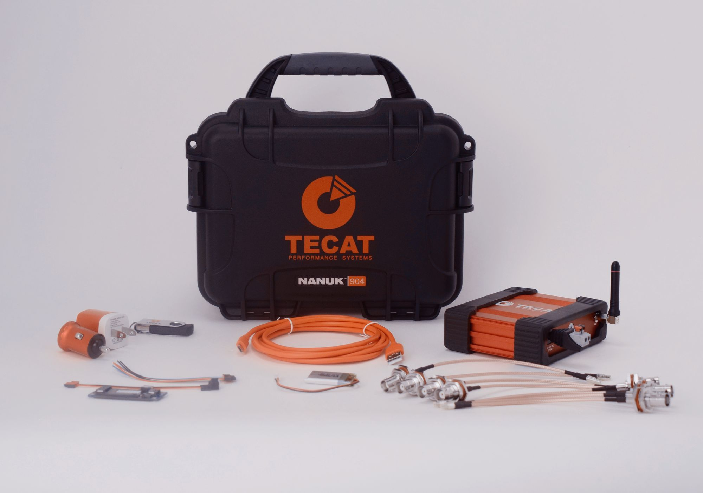

TECAT 468 Single Channel
Single-channel wireless strain system for torque on shafts, flexplates, and driveline parts.
- sampling versions
- 4, 6, or 8 kHz
- A/D converter
- 16-bit
Wireless telemetry for parts in motion
TECAT systems mount directly on shafts and other moving components and deliver processed data in real time, from places wired instrumentation can't reach.

"What if we could directly read the load and proactively respond before the engine speed changes?"
A TECAT remote unit rides on the rotating part and sends processed strain data to a base unit beside your PC or data acquisition system while the part runs.
Products
Single-channel wireless strain system for torque on shafts, flexplates, and driveline parts.
Two-channel wireless strain system for torque and thrust together, bending, and low-strain structures.
Two-channel wireless K-type thermocouple system for brake rotor temperature inside the wheel hub.
Sensor fusion board and base unit for OEMs building wireless telemetry into products.
How it works
Mounts on the moving part. Holds the capture electronics, Micro-Measurements strain gages or thermocouples, the radio, and a long-life battery.
Plugs into your PC by USB. Holds the antenna and receiver, with analog outputs that feed your data acquisition system.
Software on the PC for setup, calibration, live monitoring, and recording.
From the field
This is real. This technology could be very important for providing a tool which has the potential to optimize the performance of each cylinder in the engine.
The TECAT products will allow real-time data acquisition, which until now, was only possible using a testing lab and very expensive equipment.
Case study
Case study on a small pipeline pig carrying an inclinometer, accelerometer, and magnetometer to locate buried valves along a six-mile line.
Download the case study (PDF, 3.8 MB)Our history
Tell us what it is, how it moves, and what you need to know. We'll follow up.